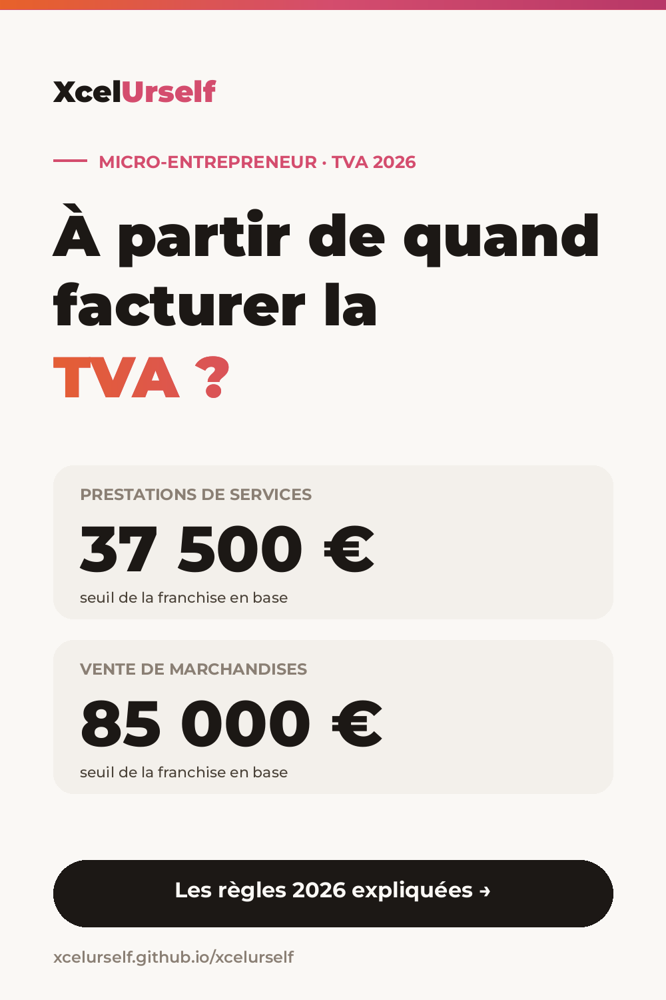

Micro-entrepreneur · TVA
Franchise de TVA : à partir de quand facturer la TVA ?
En micro-entreprise, tu ne factures en général pas de TVA. Mais ce n'est vrai que sous certains seuils, et le dépassement n'a pas la même conséquence selon le montant. Voici les règles de 2026, avec un exemple.
1. Le principe de la franchise en base
La franchise en base de TVA t'exonère de la déclaration et du paiement de la TVA sur tes ventes et prestations. Elle s'applique en général automatiquement dès la création de la micro-entreprise. En contrepartie, tes factures doivent porter la mention : « TVA non applicable - article 293 B du CGI ».
2. Les seuils 2026
| Activité | Seuil de base (année N-1) | Seuil majoré (année N) |
|---|---|---|
| Vente de marchandises, hébergement | 85 000 € | 93 500 € |
| Prestations de services, professions libérales (hors avocats) | 37 500 € | 41 250 € |
Ces seuils restent inchangés en 2026 : le projet d'un seuil unique à 25 000 € a été abandonné. Source : Entreprendre Service Public.
3. Que se passe-t-il en cas de dépassement ?
- Tu dépasses le seuil de base, mais pas le seuil majoré. Tu gardes la franchise jusqu'au 31 décembre de l'année en cours. La TVA s'applique à partir du 1er janvier suivant.
- Tu dépasses le seuil majoré. La franchise s'arrête dès la date du dépassement : à partir de ce jour, tu factures la TVA.
- Tu deviens redevable de la TVA. Tu la factures à tes clients, et tu peux déduire celle de tes achats professionnels.
4. Un exemple concret
Une profession libérale réalise 24 000 € de chiffre d'affaires en 2025 : elle reste sous 37 500 €, donc elle est en franchise en 2026. Si elle atteint 38 500 € en 2026, elle dépasse le seuil de base (37 500 €) mais reste sous le seuil majoré (41 250 €). Elle garde la franchise jusqu'au 31 décembre 2026, puis facture la TVA à partir du 1er janvier 2027.
5. Si tu cumules vente et services
Dans une activité mixte, deux conditions s'ajoutent : le chiffre d'affaires global ne doit pas dépasser 85 000 €, et la partie services ne doit pas dépasser 37 500 €.
6. Ne pas confondre avec le plafond micro
Ces seuils de TVA ne sont pas ceux de la micro-entreprise. Les plafonds du régime micro (203 100 € ou 83 600 € en 2026) sont plus élevés, et l'administration les a déconnectés de ceux de la TVA. Le détail est dans l'article Plafond de chiffre d'affaires de la micro-entreprise.
Modèle Excel
L'échéancier Urssaf XcelUrself
Un classeur Excel, sans macro, où tu saisis tes recettes : le montant à mettre de côté se calcule tout seul, et ton chiffre d'affaires de l'année est comparé au plafond micro-entreprise et à la franchise de TVA, avec une alerte avant de les franchir.
Voir le modèle Excel →
Article rédigé par Joffrey Gros, formateur Excel et micro-entrepreneur. Informations générales, non constitutives d'un conseil comptable ou juridique : vérifie toujours les seuils en vigueur auprès de l'administration. Sources : Entreprendre Service Public, impots.gouv.fr, economie.gouv.fr et autoentrepreneur.urssaf.fr, contrôlées le 14 novembre 2026.